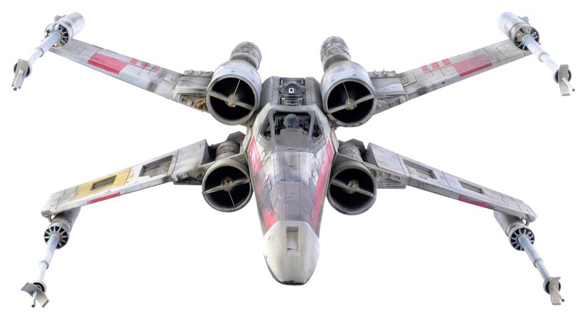
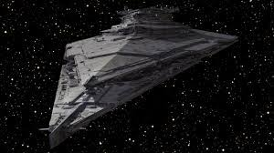
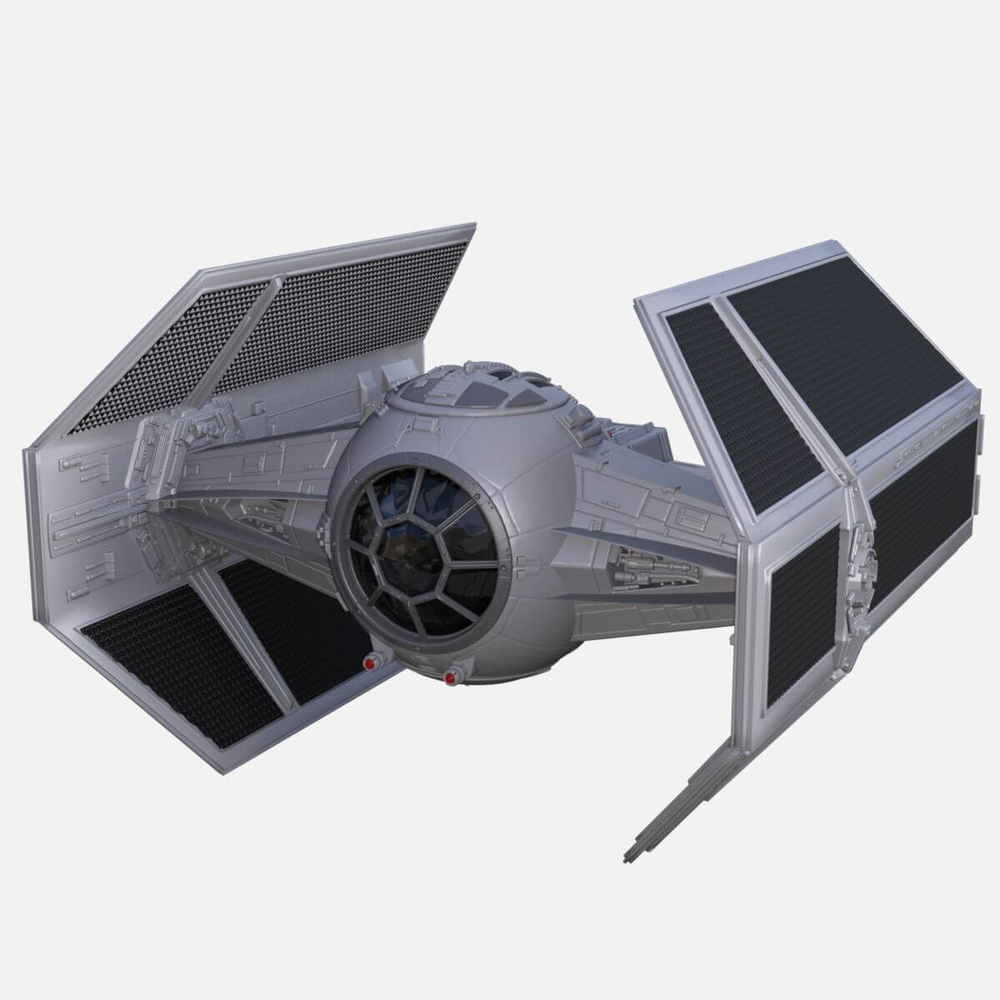
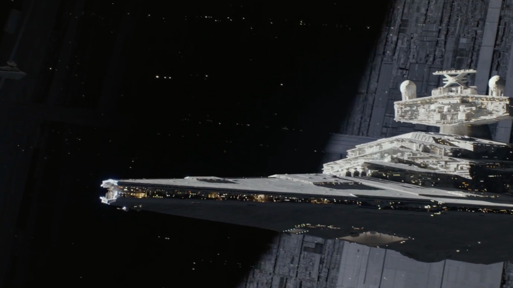
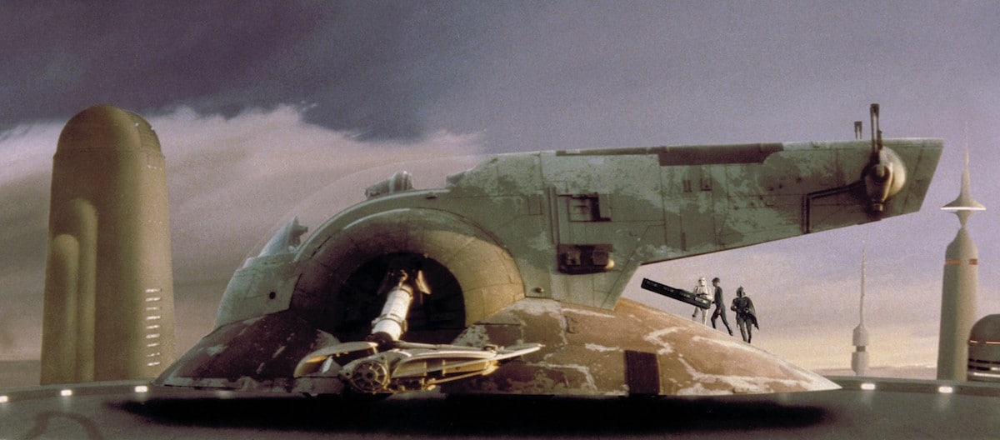

Most powerful Star Wars spaceships
TOP-6
Millennium Falcon

There's a reason this version of the ship is the star attraction at Disney Parks' Star Wars: Galaxy's Edge: Battered or no, it is the star attraction of the Star Wars universe. What it lacks in size (it's a modest 115 feet, or 35 meters long), it makes up in swagger, longevity -- and evasive-maneuvering capability. Though many have tried, Han's modified ride can't be caught. The Falcon isn't just regarded as one of the fastest ships in the Star Wars franchise, but in the entire sci-fi universe.
X-wing fighter

As the all-too-mortal Executor proves, size is not the end all, be all. This compact (41-foot, 12.5-meter long) Rebel spitfire gets the job done in the first Star Wars, when, under the control of Luke Skywalker, one of its proton torpedoes explodes the Death Star.
Finalizer

At some 9,500 feet (2,915 meters) long, Kylo Ren's and General Hux's flagship ride in Force Awakens and Last Jedi is nearly twice the length of an Imperial-class Star Destroyer. But what really takes this battle cruiser to the next level is her weaponry: Per the book Star Wars: The Force Awakens -- Incredible Cross-Sections, the Finalizer boasts more than 1,500 turbolasers and ion cannons.
Darth Vader's TIE fighter

According to Wookieepedia, this über-iconic craft is a TIE Advanced x1. But StarWars.com is more direct: It identifies it solely by the name of its pilot. And we can't quibble: This is Darth Vader's TIE fighter, the one he flies into the Death Star's trenches -- and into film history -- in Star Wars: A New Hope.
The Devastator

Darth Vader's nearly 5,250-foot-long (1,600-meter), Imperial-class Star Destroyer, teaming with 40,000 crew, delivers the first jaw-dropping moment in the first Star Wars as its massive self swoops over us in pursuit of the comparatively puny Tantive IV.
Slave 1

The seismic charges emitted from Jango Fett's ship from Attack of the Clonesare devastating, audibly unsettling -- and all-around awesome.